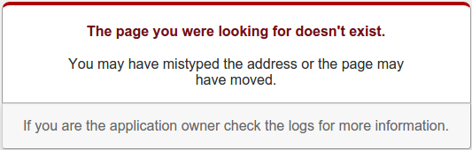

Django 1.8 Collection of Errors and Fixes

In this chapter, while developing einsteinish.com, I made a collection for errors and fixes to use it as my future reference.
This usually happens while were developing the code in local mode.
Domain name for the site should be localhost:8000:
We get the error because we don't have a site defined in our database but django wants to reference it. So, we will need to create one.
To check the site id:
(venv)$ python manage.py shell In [1]: from django.contrib.sites.models import Site In [2]: new_site = Site.objects.create(domain='localhost:8000', name='localhost:8000') In [3]: print new_site.id 3
Then, in our local_settings.py, we need to set the matching ID:
SITE_ID = 3 # localhost
With the setup, a user can get a valid activation link via email as shown below:
http://localhost:8000/accounts/activate/7a21ad9fdd360d9ebe5575e6b8a75ce8cfec7133/
Got TemplateSyntaxError at / ... - not a valid tag library:
'einsteinish' is not a valid tag library: Template library einsteinish not found, tried ... In template /var/www/django/einsteinish3/templates/snippets/navbar.html, error at line 1
It also show which line of code has the issue:
{% load active from einsteinish %}
It turned out, we do not have a templatetags. Actually, we copied the project from the script used to build sfvue.com. So, we need to rename it:
$ ls /var/www/django/einsteinish3/resources/templatetags __init__.py sfvue.py
We have another tempaltetags:
$ mv sfvue.py einsteinish.py $ ls /var/www/django/einsteinish3/resources/templatetags einsteinish.py __init__.py
When we try to upload an image file to /media directory, we get the following error:
OSError at /manage/resources/topic/add/ [Errno 13] Permission denied: '/var/www/django/einsteinish3/media/topics/Andromeda-Milky-Collision.png'
Let's look into the issue, especially, the permission for the /media directory:
$ ls -la ... drwxr-xr-x 3 sfvue wheel 4096 Jan 4 11:22 media ...
Yes, the Apache server (user) needs permission.
Let's find out what user Apache is running as:
$ ps aux | egrep '(apache*|httpd)' root 4311 0.0 2.5 414780 25804 ? Ss 18:03 0:00 /usr/sbin/httpd -DFOREGROUND apache 4313 0.1 6.0 819992 61416 ? Sl 18:03 0:03 /usr/sbin/httpd -DFOREGROUND apache 4314 0.0 1.7 679044 18168 ? Sl 18:03 0:00 /usr/sbin/httpd -DFOREGROUND ...
So, we should change the owner of the folder:
$ sudo chown -R apache:apache media (venv)[sfvue@sf einsteinish3]$ ls -la ... drwxr-xr-x 3 apache apache 4096 Jan 4 11:22 media ...
At ./manage.py migrate, we got the following error:
...
raise ImproperlyConfigured("settings.DATABASES is improperly configured. "
django.core.exceptions.ImproperlyConfigured: settings.DATABASES is improperly configured. Please supply the ENGINE value.
The answer can be found ImproperlyConfigured: settings.DATABASES is improperly configured. Please supply the ENGINE value
Here is our settings (search_app/settings.py)that fixes the issue:
...
DATABASES = {
'default': {
'ENGINE': 'django.db.backends.postgresql_psycopg2',
'NAME': 'search_app_db',
'USER': 'k',
'PASSWORD': 'password',
'HOST': '',
'PORT': '',
}
}
...
import dj_database_url
DATABASE_URL = 'postgresql:///postgresql'
TABASES = {'default': dj_database_url.config(default=DATABASE_URL)}
...
We're using Haystack with elasticsearch as backend.
The update_index command will freshen all of the content in our index. It iterates through all indexed models and updates the records in the index. (Management Commands)
We got an error because elasticsearch was not running.
So, basically, in this section, we want to describe how to install and run it outside of venv.
While trying to update search index, got the following error:
$ pwd /var/www/django/einsteinish3 [sfvue@sf einsteinish3]$ source venv/bin/activate (venv)[sfvue@sf einsteinish3]$ python manage.py update_index ... Indexing 0 projects Indexing 1 resources ERROR:root:Error updating resources using default ... elasticsearch.exceptions.ConnectionError: ConnectionError(<urllib3.connection.HTTPConnection object at 0x2be75d0>: Failed to establish a new connection: [Errno 111] Connection refused) caused by: NewConnectionError(<urllib3.connection.HTTPConnection object at 0x2be75d0>: Failed to establish a new connection: [Errno 111] Connection refused)
Checked the connection:
(venv)[sfvue@sf einsteinish3]$ curl -X GET http://127.0.0.1:9200/_cat/indices curl: (7) Failed connect to 127.0.0.1:9200; Connection refused
Checked listening port:
(venv)[sfvue@sf einsteinish3]$ netstat -nlpt (No info could be read for "-p": geteuid()=1000 but you should be root.) Active Internet connections (only servers) Proto Recv-Q Send-Q Local Address Foreign Address State PID/Program name tcp 0 0 0.0.0.0:3306 0.0.0.0:* LISTEN - tcp 0 0 0.0.0.0:22 0.0.0.0:* LISTEN - tcp6 0 0 :::80 :::* LISTEN - tcp6 0 0 :::22 :::* LISTEN -
No port 9200!
Probably that's because either elasticsearch is not installed or not running. If not installed, we need to install Java first.
Java install:
$ sudo yum install java-1.7.0-openjdk $ sudo yum install java-1.7.0-openjdk-devel
Set JAVA_HOME:
$ readlink -f /usr/bin/javac /usr/lib/jvm/java-1.7.0-openjdk-1.7.0.91-2.6.2.3.el7.x86_64/bin/javac
Add the following line in ~/.bashrc:
export JAVA_HOME=/usr/lib/jvm/java-1.7.0-openjdk-1.7.0.91-2.6.2.3.el7.x86_64
Now, we can install elasticserch:
Elasticsearch can be installed with a package manager by adding Elastic's package repository. Run the following command to import the Elasticsearch public GPG key into rpm:
$ sudo rpm --import http://packages.elastic.co/GPG-KEY-elasticsearch
Create and edit a new yum repository file for Elasticsearch:
$ sudo vi /etc/yum.repos.d/elasticsearch.repo
Add the following repository configuration in /etc/yum.repos.d/elasticsearch.repo
[elasticsearch-2.1] name=Elasticsearch repository for 2.x packages baseurl=http://packages.elastic.co/elasticsearch/2.x/centos gpgcheck=1 gpgkey=http://packages.elastic.co/GPG-KEY-elasticsearch enabled=1Install Elasticsearch with this command:
$ sudo yum -y install elasticsearch
Elasticsearch is now installed. Let's edit the configuration:
$ sudo vi /etc/elasticsearch/elasticsearch.yml
We will want to restrict outside access to our Elasticsearch instance (port 9200), so outsiders can't read our data or shutdown our Elasticsearch cluster through the HTTP API. Find the line that specifies network.host, uncomment it, and replace its value with "localhost" so it looks like this:
network.host: localhost
Now start Elasticsearch:
$ sudo systemctl start elasticsearch
Or:
$ sudo service elasticsearch start
Then run the following command to start Elasticsearch automatically on boot up:
$ sudo systemctl enable elasticsearch
Or:
$ sudo systemctl enable elasticsearch.service
Check if it's running:
$ netstat -nlpt|grep 9200 (No info could be read for "-p": geteuid()=1000 but you should be root.) tcp6 0 0 ::1:9200 :::* LISTEN - tcp6 0 0 127.0.0.1:9200 :::* LISTEN -
Simple test to see if Elasticsearch is working:
$ curl 'http://localhost:9200/?pretty'
{
"name" : "Quasar",
"cluster_name" : "elasticsearch",
"version" : {
"number" : "2.1.1",
"build_hash" : "40e2c53a6b6c2972b3d13846e450e66f4375bd71",
"build_timestamp" : "2015-12-15T13:05:55Z",
"build_snapshot" : false,
"lucene_version" : "5.3.1"
},
"tagline" : "You Know, for Search"
}
Now, if we run update_index, we don't have the error anymore:
(venv)[sfvue@sf einsteinish3]$ python manage.py update_index ... Indexing 0 projects Indexing 1 resources (venv)[sfvue@sf einsteinish3]$
Our search seems to be working now!

Examples for update_index:
# Update everything. ./manage.py update_index --settings=settings.prod # Update everything with lots of information about what's going on. ./manage.py update_index --settings=settings.prod --verbosity=2 # Update everything, cleaning up after deleted models. ./manage.py update_index --remove --settings=settings.prod # Update everything changed in the last 2 hours. ./manage.py update_index --age=2 --settings=settings.prod # Update everything between June. 1, 2016 & July 31, 2016 ./manage.py update_index --start='2016-06-01T00:00:00' --end='2016-07-31T23:59:59' --settings=settings.prod # Update just a couple apps. ./manage.py update_index blog auth comments --settings=settings.prod # Update just a single model (in a complex app). ./manage.py update_index auth.User --settings=settings.prod # Crazy Go-Nuts University ./manage.py update_index events.Event media news.Story --start='2016-01-01T00:00:00 --remove --using=hotbackup --workers=12 --verbosity=2 --settings=settings.prod
There is another case when update_index failed because of shortage of memory. If we're running out of memory, the elasticsearch itself may stop running.
My server has only 1G memory, so I had to get swap space from HD.
For more information: Creating a Swap File on CentOS 7.
Also, I put the updating task into cron to run it every hour as a root:
0 * * * * /var/www/django/einsteinish3/venv/bin/python /var/www/django/einsteinish3/manage.py update_index
While doing index update:
$ python manage.py update_index
I got the following error:
File "/var/www/django/einsteinish3/venv/lib/python2.7/site-packages/haystack/fields.py", line 103, in prepare
raise SearchFieldError("The model '%s' combined with model_attr '%s' returned None, but doesn't allow a default or null value." % (repr(obj), self.model_attr))
haystack.exceptions.SearchFieldError: The model '<Resource: The scale of the universe>' combined with model_attr 'help_text' returned None, but doesn't allow a default or null value.
Actually, I have the following line of code (/profiles/search_indexes.py):
help_text = indexes.CharField(model_attr='help_text')
I needed to change the line to allow null:
help_text = indexes.CharField(model_attr='help_text', null=True)
After that I could manage to update the index:
$ python manage.py update_index ... Indexing 0 projects Indexing 13 resources
Fix for "Table already exists" error when we do migrate after changing schema (in this case, adding a new field to the existing table.
When I tried to add a new field (thumbnail for image upload) to a table for resources which is one of my apps:
from django.db import models
from django.contrib.auth.models import User
from djangoratings.fields import RatingField
from django.core.urlresolvers import reverse
from sfvue.utils import unique_slugify
from django.template.defaultfilters import slugify
LEVELS = ['introductory', 'intermediate', 'in-depth']
class Topic(models.Model):
name = models.CharField(max_length=60, unique=True)
slug = models.SlugField(max_length=255)
help_text = models.CharField(max_length=255, null=True, blank=True)
description = models.TextField(null=True, blank=True)
thumbnail = models.ImageField(upload_to='topics/%Y/%m/%d/', null=True, blank=True)
official_website = models.URLField(null=True, blank=True)
class Meta:
ordering = ['name',]
def __unicode__(self):
return self.name
def get_absolute_url(self):
return reverse('resource_topic_home', kwargs={'slug': self.slug})
def save(self, *args, **kwargs):
if not self.slug:
self.slug = slugify(self.name)
if self.description and not self.help_text:
self.help_text = self.description.replace("\n", " ")[:220]
super(Topic, self).save(*args, **kwargs)
class ResourceType(models.Model):
name = models.CharField(max_length=60, unique=True)
slug = models.SlugField(max_length=255)
help_text = models.CharField(max_length=255, null=True, blank=True)
color = models.CharField(max_length=20, default='purple', unique=True)
def __unicode__(self):
return self.name
def get_absolute_url(self):
return reverse('resource_list', kwargs={'slug': self.slug})
def save(self, *args, **kwargs):
if not self.slug:
self.slug = slugify(self.name)
super(ResourceType, self).save(*args, **kwargs)
class Resource(models.Model):
title = models.CharField(max_length=255, unique=True)
slug = models.SlugField(max_length=255, blank=True, default='')
url = models.URLField(unique=True)
help_text = models.CharField(max_length=255, null=True, blank=True)
description = models.TextField(null=True, blank=True, default='')
DEFAULT_RESOURCE_TYPE_ID=2
resource_type = models.ForeignKey(ResourceType, default=DEFAULT_RESOURCE_TYPE_ID)
CHOICES=zip(LEVELS,LEVELS)
level = models.CharField('Level of depth', max_length=30, choices=CHOICES, blank=True, default=CHOICES[0][0])
topics = models.ManyToManyField(Topic)
created_by = models.ForeignKey(User)
rating = RatingField(range=5, weight=10, use_cookies=True, allow_delete=True)
created_at = models.DateTimeField(auto_now_add=True, editable=False)
updated_at = models.DateTimeField(auto_now=True, editable=False)
show = models.BooleanField(default=True)
thumbnail = models.ImageField(upload_to='resources/%Y/%m/%d/', null=True, blank=True)
def __unicode__(self):
return self.title
def get_absolute_url(self):
return reverse('resource_detail', kwargs={'pk': self.id})
def save(self, *args, **kwargs):
#INFO Checks if present because admins have option to change slug
if not self.slug:
slug_str = '%s' % self.title
unique_slugify(self, slug_str)
if self.description and not self.help_text:
self.help_text = self.description.replace("\n", " ")[:220]
super(Resource, self).save(*args, **kwargs)
def check_featured(self):
for topic in self.topics.all():
try:
fr = FeaturedResource.objects.get(resource=self, topic=topic, resource_type=self.resource_type)
return True
except FeaturedResource.DoesNotExist:
pass
return False
def make_featured(self, topic=None):
if self.topics.count()==1:
t = self.topics.all()[0]
elif topic:
if topic in self.topics.all():
t = topic
else:
return False
try:
fr = FeaturedResource.objects.get(topic=t, resource_type=self.resource_type)
fr.resource = self
fr.save()
except FeaturedResource.DoesNotExist:
fr = FeaturedResource.objects.create(topic=t, resource_type=self.resource_type, resource=self)
return True
class FeaturedResource(models.Model):
topic = models.ForeignKey(Topic)
resource_type = models.ForeignKey(ResourceType)
resource = models.ForeignKey(Resource)
class Meta:
unique_together = ('topic', 'resource_type')
def __unicode__(self):
return '%s - %s' %(self.topic, self.resource_type)
def clean(self):
from django.core.exceptions import ValidationError
if self.resource_type != self.resource.resource_type:
raise ValidationError("Selected resource type does not match with given resource's type.")
if not self.topic in self.resource.topics.all():
raise ValidationError("Selected resource does not have given topic.")
from guardian.shortcuts import assign_perm
from django.db.models.signals import post_save
def create_resource_permission(sender, instance, created, **kwargs):
if created:
assign_perm('change_resource', instance.created_by, instance)
assign_perm('delete_resource', instance.created_by, instance)
post_save.connect(create_resource_permission, sender=Resource)
Then issued the makemigrations command:
$ python manage.py makemigrations resources
Migrations for 'resources':
0002_resource_thumbnail.py:
- Add field thumbnail to resource
Then, to migrate, migrate command was used. But got the error because one of the tables of the resources app already exists :
$ python manage.py migrate resources Operations to perform: Apply all migrations: resources Running migrations: Rendering model states... DONE Applying resources.0001_initial...Traceback (most recent call last): ... django.db.utils.OperationalError: (1050, "Table 'resources_featuredresource' already exists")
So, I re-issued the migrate command with a flag --fake-initial:
$ python manage.py migrate --fake-initial resources ... Apply all migrations: resources Running migrations: Rendering model states... DONE Applying resources.0001_initial... FAKED Applying resources.0002_resource_thumbnail... OK
We can see the new field for image thumbnail has been added:
However, the process is not always straight-forward. Later I added another field called video to the resources/models.py, this time it didn't work. I mean Django migrate failed to apply migration file.
We should look into what's in our migration files!
In the previous case, the reason of using the --fake-initial was the 0001_initial file has operations dropping a column of a table that has a field does not exists. This happened because we failed earlier migrate attempt to add the field. So, we needed to skip that initial migration file.
Now, we need to clean up our migration files before we perform migrate. I removed resources/migration folder itself, and created an initial migration file with the old code (we could have achieved the same results if we had removed all migration files and have issued ./manage.py makemigrations --empty resources).
Let's look into the migration files, 0001_initial.py, clean:
# -*- coding: utf-8 -*-
from __future__ import unicode_literals
from django.db import migrations, models
class Migration(migrations.Migration):
dependencies = [
]
operations = [
]
So, we do not need to use --fake-initial this time. The next migration file, 0002_resource_video.py has one clear job to do. Nothing else:
# -*- coding: utf-8 -*-
from __future__ import unicode_literals
from django.db import migrations, models
class Migration(migrations.Migration):
dependencies = [
('resources', '0001_initial'),
]
operations = [
migrations.AddField(
model_name='resource',
name='video',
field=models.FileField(null=True, upload_to=b'resources/%Y/%m/%d/', blank=True),
),
]
Let's do migrate:
$ ./manage.py migrate resources ... Operations to perform: Apply all migrations: resources Running migrations: Rendering model states... DONE Applying resources.0002_resource_video... OK
We can see the new field for video has been added:
This is related to the previous section. When I try to the upload an image, it seems to getting it:
But after clicking "Save" button, I found the image was not saved into DB.
This was an easy fix. All I had to do was adding enctype="multipart/form-data" when we do POST:
{% extends "resources/base.html" %}
{% block resource_content %}
<p>
<a href="{% if request.META.HTTP_REFERER %}{{ request.META.HTTP_REFERER }}{% else %}{% url 'resource_home' %}{% endif %}" class="btn"><i class="icon-double-angle-left"></i> Back</a>
</p>
<div class="span8 offset2">
<form action="" method="post" enctype="multipart/form-data">
{% include "snippets/forms/form_base_block.html" %}
<button class="btn btn-primary" type="submit"><i class="icon-save"></i> Save</button>
</form>
</div>
{% endblock %}
The enctype attribute specifies how the form-data should be encoded when submitting it to the server. The enctype attribute can be used only if method="post".
Here is a brief table:
| Value | Description |
|---|---|
| application/x-www-form-urlencoded | Default. All characters are encoded before sent (spaces are converted to "+" symbols, and special characters are converted to ASCII HEX values) |
| multipart/form-data | No characters are encoded. This value is required when we're using forms that have a file upload control |
| text/plain | Spaces are converted to "+" symbols, but no special characters are encoded |
I am using Django 1.8 and had the following warnings when I do runserver:
WARNINGS: ?: (1_8.W001) The standalone TEMPLATE_* settings were deprecated in Django 1.8 and the TEMPLATES dictionary takes precedence. You must put the values of the following settings into your default TEMPLATES dict: TEMPLATE_DEBUG.
We can put TEMPLATE_DEBUG = DEBUG under the 'debug' key in 'OPTIONS':
TEMPLATES = [
{
'BACKEND': 'django.template.backends.django.DjangoTemplates',
'DIRS': [
# insert your TEMPLATE_DIRS here
os.path.join(PROJECT_ROOT, 'templates'),
],
'APP_DIRS': True,
'OPTIONS': {
'debug': DEBUG,
'context_processors': [
# Insert your TEMPLATE_CONTEXT_PROCESSORS here or use this
# list if you haven't customized them:
'django.contrib.auth.context_processors.auth',
'django.core.context_processors.debug',
'django.core.context_processors.i18n',
'django.core.context_processors.media',
'django.core.context_processors.request',
'django.contrib.messages.context_processors.messages',
'django.core.context_processors.static',
'django.template.context_processors.tz',
],
},
},
]
I get this error: Job for httpd.service failed because the control process exited with error code... when I try to restart Apache server on CentOS 7.
Eventually I managed the server back to work normally, however, it was painful since my two domains were down with it.
The actual message does look like this:
Job for httpd.service failed because the control process exited with error code. See "systemctl status httpd.service" and "journalctl -xe" for details.
So, I follow the advice of the message, and issued those commands.
status check:
[sfvue@sf ~]$ systemctl status httpd.service
â httpd.service - The Apache HTTP Server
Loaded: loaded (/usr/lib/systemd/system/httpd.service; disabled; vendor preset: disabled)
Active: failed (Result: exit-code) since Fri 2016-01-15 12:16:44 PST; 1min 12s ago
Docs: man:httpd(8)
man:apachectl(8)
Process: 7054 ExecStop=/bin/kill -WINCH ${MAINPID} (code=exited, status=1/FAILURE)
Process: 14916 ExecReload=/usr/sbin/httpd $OPTIONS -k graceful (code=exited, status=0/SUCCESS)
Process: 7053 ExecStart=/usr/sbin/httpd $OPTIONS -DFOREGROUND (code=exited, status=1/FAILURE)
Main PID: 7053 (code=exited, status=1/FAILURE)
Jan 15 12:16:44 sf systemd[1]: Starting The Apache HTTP Server...
Jan 15 12:16:44 sf httpd[7053]: httpd: Syntax error on line 325 of /etc/httpd/conf/httpd.conf: Coul...ctory
Jan 15 12:16:44 sf systemd[1]: httpd.service: main process exited, code=exited, status=1/FAILURE
Jan 15 12:16:44 sf kill[7054]: kill: cannot find process ""
Jan 15 12:16:44 sf systemd[1]: httpd.service: control process exited, code=exited status=1
Jan 15 12:16:44 sf systemd[1]: Failed to start The Apache HTTP Server.
Jan 15 12:16:44 sf systemd[1]: Unit httpd.service entered failed state.
Jan 15 12:16:44 sf systemd[1]: httpd.service failed.
Hint: Some lines were ellipsized, use -l to show in full.
Also, journalctl:
[sfvue@sf ~]$ journalctl -xe Jan 15 12:16:44 sf polkitd[2547]: Unregistered Authentication Agent for unix-process:7048:279896144 (system Jan 15 12:17:17 sf sshd[7023]: pam_unix(sshd:session): session closed for user sfvue Jan 15 12:17:17 sf systemd-logind[13612]: Removed session 5594. -- Subject: Session 5594 has been terminated -- Defined-By: systemd -- Support: http://lists.freedesktop.org/mailman/listinfo/systemd-devel -- Documentation: http://www.freedesktop.org/wiki/Software/systemd/multiseat -- -- A session with the ID 5594 has been terminated. Jan 15 12:17:44 sf sshd[7063]: Address 212.156.88.46 maps to 212.156.88.46.static.turktelekom.com.tr, but t Jan 15 12:17:44 sf sshd[7063]: Invalid user jenkins from 212.156.88.46 Jan 15 12:17:44 sf sshd[7063]: input_userauth_request: invalid user jenkins [preauth] Jan 15 12:17:44 sf sshd[7063]: pam_unix(sshd:auth): check pass; user unknown Jan 15 12:17:44 sf sshd[7063]: pam_unix(sshd:auth): authentication failure; logname= uid=0 euid=0 tty=ssh r Jan 15 12:17:46 sf sshd[7063]: Failed password for invalid user jenkins from 212.156.88.46 port 65468 ssh2 Jan 15 12:17:46 sf sshd[7063]: Received disconnect from 212.156.88.46: 11: Bye Bye [preauth] Jan 15 12:17:51 sf kernel: iptables denied: IN=eth0 OUT= MAC=f2:3c:91:98:43:32:84:78:ac:0d:79:c1:08:00 SRC= Jan 15 12:18:16 sf sshd[7066]: Invalid user userftp from 196.45.48.130 Jan 15 12:18:16 sf sshd[7066]: input_userauth_request: invalid user userftp [preauth] Jan 15 12:18:16 sf sshd[7066]: pam_unix(sshd:auth): check pass; user unknown Jan 15 12:18:16 sf sshd[7066]: pam_unix(sshd:auth): authentication failure; logname= uid=0 euid=0 tty=ssh r Jan 15 12:18:17 sf sshd[7066]: Failed password for invalid user userftp from 196.45.48.130 port 39067 ssh2 Jan 15 12:18:18 sf sshd[7066]: Connection closed by 196.45.48.130 [preauth]
The server has been working forever but suddenly won't restart. The message from the status check, "httpd: Syntax error on line 325 of /etc/httpd/conf/httpd.conf" was misleading because I haven't touched anything on the file.
To make it short, I found two culprits:
- I was adding the 3rd domain, and restarted the Apache with some flawed virtual configuration. In the config file (pygoogle.com.conf), I had a logs directory which was not created yet:
ErrorLog /var/www/pygoogle.com/logs/error.log CustomLog /var/www/pygoogle.com/logs/access.log combinedAfter I created the logs directory, everything started properly.
Now my sites are safe:
[sfvue@sf sites-available]$ ls -la ../sites-enabled/ total 8 drwxr-xr-x 2 root root 4096 Jan 15 17:55 . drwxr-xr-x 8 root root 4096 Jan 15 12:56 .. lrwxrwxrwx 1 root root 47 Jan 15 15:15 einsteinish.com.conf -> /etc/httpd/sites-available/einsteinish.com.conf lrwxrwxrwx 1 root root 44 Jan 15 17:55 pygoogle.com.conf -> /etc/httpd/sites-available/pygoogle.com.conf lrwxrwxrwx 1 root root 41 Jan 15 15:11 sfvue.com.conf -> /etc/httpd/sites-available/sfvue.com.conf
I use phpmyadmin via local port forwarding:
$ ssh -L 9001:localhost:80 -l sfvue 45.79.90.218
It's been working just fine but all of a sudden I got "Page not found" error on:
localhost:9001/phpmyadmin
It did not take long before I found the reason. It's related to reinstalling Apache. So, I reinstalled php/phpMyAdmin:
$ sudo yum install php $ sudo yum install phpMyAdmin
Again, now I have an access to my DB from my local machine!
Note:
Basically, we need to do the following (not just for port forwarding):
- Set a soft link:
$ sudo ln -s /usr/share/phpMyAdmin /var/www/html/phpmyadmin $ ls -la /var/www/html/phpmyadmin lrwxrwxrwx 1 root root 21 Oct 10 02:28 /var/www/html/phpmyadmin -> /usr/share/phpMyAdmin
- Also, we need a default http configuration file in /etc/httpd/sites-available/000-default.conf which looks like this:
<VirtualHost *:80> ServerAdmin webmaster@localhost DocumentRoot /var/www/html ErrorLog /var/log/httpd/error.log CustomLog /var/log/httpd/access.log combined </VirtualHost>
Local port forwarding has been working but it suddenly stopped functioning:
Remote server's phpmyadmin is there, and local ssh is clearly listening to local port 9001:
$ netstat -anlpt|grep 9001 tcp 0 0 127.0.0.1:9001 0.0.0.0:* LISTEN 7026/ssh
What's wrong?
After spending some time on the issue, I found this does not work:
$ http://localhost:9001/phpmyadmin
But if we add "index.php" it does work:
$ http://localhost:9001/phpmyadmin/index.php
Odd! Probably I messed up vhost settings?
I'm getting old. I forgot what I did a month ago. It took me half an hour to figure it out why there were missing urls for flat pages such as 'About', 'Guideline' etc. on my einsteinish.com.
It turned out it hasn't been implemented on the site but it was another site, sfvue.com.
These days, I'm managing quite a few domains and right now I'm heavily working on Angular front and Laravel backend project. So, it's not rare for me to lose about an hour to move from one to another project.
Anyway, one of the method to create a flat page is to directly working on Admin page:

We should not forget selecting the "site" at the bottom of the page!
Our Django app sends an activation email when the user try to register. But by default, the link that sent to the user is not from "domainname.com" but from "example.com", which is not going to work.
So, before we send the activation email, we need to set the site name (dbname is django_site). We can set it from the db-console command line or phpmyadmin.
Also, we need to set SITE_ID of settings.py(actually, local_settings.py) which should match the "id" of the site in db's django_site.
Sometimes, my dev db is behind the production. So, I have to sync the two DBs.
Backup on the server DB:
$ mysqldump -u root -p einsteinishdb5 > einsteinishdb5.backup
Restore on my local DB:
$ mysql -u root -p einsteinishdb5 < einsteinishdb5.backup
Ph.D. / Golden Gate Ave, San Francisco / Seoul National Univ / Carnegie Mellon / UC Berkeley / DevOps / Deep Learning / Visualization